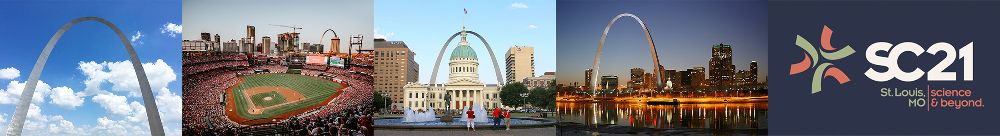

Correctness 2021: Fifth International Workshop on Software Correctness for HPC Applications
November 19, 2021 (half day, 8:30am - 12pm CST)
America’s Center Convention Complex
St. Louis, MO, USA
Held in conjunction with SC21: The International Conference for High Performance Computing, Networking, Storage and Analysis
Ensuring correctness in high-performance computing (HPC) applications is one of the fundamental challenges that the HPC community faces today. While significant advances in verification, testing, and debugging have been made to isolate software errors (or defects) in the context of non-HPC software, several factors make achieving correctness in HPC applications and systems much more challenging than in general systems software—growing heterogeneity (architectures with CPUs, GPUs, and special purpose accelerators), massive scale computations (very high degree of concurrency), use of combined parallel programing models (e.g., MPI+X), new scalable numerical algorithms (e.g., to leverage reduced precision in floating-point arithmetic), and aggressive compiler optimizations/transformations are some of the challenges that make correctness harder in HPC. The following report lays out the key challenges and research areas of HPC correctness: DOE Report of the HPC Correctness Summit.
As the complexity of future architectures, algorithms, and applications in HPC increases, the ability to fully exploit exascale systems will be limited without correctness. With the continuous use of HPC software to advance scientific and technological capabilities, novel techniques and practical tools for software correctness in HPC are invaluable.
The goal of the Correctness Workshop is to bring together researchers and developers to present and discuss novel ideas to address the problem of correctness in HPC. The workshop will feature contributed papers and invited talks in this area.
Workshop Topics
Topics of interest include, but are not limited to:
Correctness in Scientific Applications and Algorithms
- Formal methods and rigorous mathematical techniques for correctness in HPC applications
- Frameworks to address the challenges of testing complex HPC applications (e.g., multiphysics applications)
- Approaches for the specification of numerical algorithms with the goal of correctness checking
- Error identification in the design and implementation of numerical algorithms using finite-precision floating point numbers
Tools for Debugging, Testing, and Correctness Checking
- Program synthesis techniques for testing and debugging HPC applications
- Tools to control the effect of non-determinism when debugging and testing HPC software
- Scalable debugging solutions for large-scale HPC applications
- Scalable tools for model checking, verification, certification, or symbolic execution
- Static and dynamic analysis to test and check correctness in the entire HPC software ecosystem
- Predictive debugging and testing approaches to forecast the occurrence of errors in specific conditions
- Machine learning and anomaly detection for bug detection and localization
Programing Models and Runtime Systems Correctness
- Correctness in emerging HPC programing models
- Analysis of software error propagation and error handling in HPC runtime systems and libraries
- Metrics to measure the degree of correctness of HPC software
- Specifications to check the correctness of runtime systems
Other Areas
- Large databases of bug reports and/or reproducible test cases of HPC software
- Benchmarks to test the effectiveness of HPC correctness tools
Submissions and Format
Authors are invited to submit manuscripts in English structured as technical or experience papers at a length of at least 6 pages but not exceeding 8 pages of content, including everything. Submissions must use the IEEE format.
Submitted papers will be peer-reviewed by the Program Committee and accepted papers will be published by IEEE Xplore via TCHPC.
Submitted papers must represent original unpublished research that is not currently under review for any other venue. Papers not following these guidelines will be rejected without review. Submissions received after the due date, exceeding length limit, or not appropriately structured may also not be considered. At least one author of an accepted paper must register for and attend the workshop. Authors may contact the workshop organizers for more information. Papers should be submitted electronically at: https://submissions.supercomputing.org/.
SC Reproducibility Initiative
We encourage authors to submit an optional artifact description (AD) appendix along with their paper, describing the details of their software environments and computational experiments to the extent that an independent person could replicate their results. The AD appendix is not included in the 8-page limit of the paper and should not exceed 2 pages of content. For more details of the SC Reproducibility Initiative please see: https://sc19.qltdclient.com/submit/reproducibility-initiative/.
Proceedings
The proceedings will be archived in IEEE Xplore via TCHPC.
Important Dates
Due to several requests, we have extended the submission deadline to Aug/16/21.- Paper submissions due:
August 9, 2021Extended: August 16, 2021 - Notification of acceptance: September 20, 2021
- E-copyright registration completed by authors: October 1, 2021
- Camera-ready papers due: October 4, 2021
All time zones are AOE.
Workshop Date
- Half-day Workshop
- November 19, 2021, 8:30am - 12pm CST
Organizers
Ignacio Laguna, LLNL
Cindy Rubio-González, UC Davis
Program Committee
Alper Altuntas, National Center for Atmospheric Research, USA
Allison H. Baker, National Center for Atmospheric Research, USA
John Baugh, North Carolina State University, USA
Hugo Brunie, INRIA, France
Patrick Carribault, CEA-DAM, France
Charisee Chiw, Galois, Inc, USA
Ganesh Gopalakrishnan, University of Utah, USA
Geoffrey C. Hulette, Sandia National Laboratories, USA
Michael O. Lam, James Madison University, USA
Jackson Mayo, Sandia National Laboratories, USA
Boyana Norris, University of Oregon, USA
Joachim Protze, RWTH Aachen University, Germany
Tristan Ravitch, Galois, Inc, USA
Emmanuelle Saillard, INRIA Bordeaux, France
Markus Schordan, Lawrence Livermore National Laboratory, USA
Tristan Vanderbruggen, Lawrence Livermore National Laboratory, USA
Venue
- America’s Center Convention Complex, St. Louis, MO, USA
- Room: TBD
Program
TBD
Contact Information
Please address workshop questions to Ignacio Laguna (ilaguna@llnl.gov) and/or Cindy Rubio-González (crubio@ucdavis.edu).